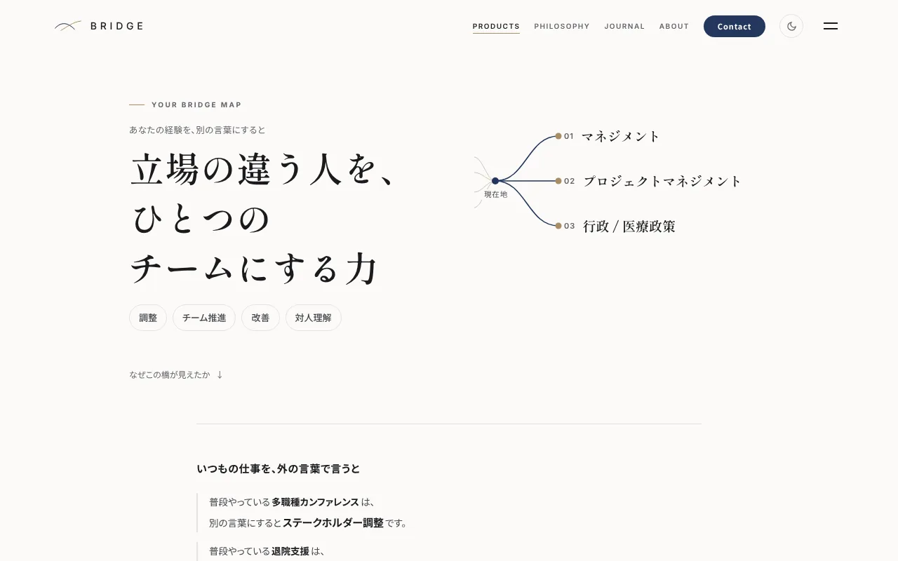
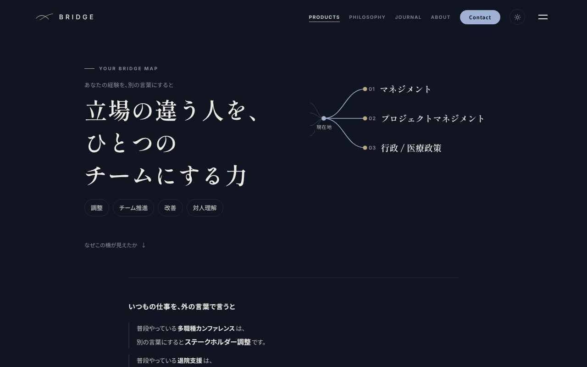

Selected — まず試すなら
初めてなら、この3つ
どれも無料・登録なしで、入力は端末の中にだけ残ります。
3分で、自分の経験の別の言い方が分かる
BRIDGE CompassCompass
10の質問に答えると、いつもの仕事の言いかえと、いまの経験から見える3つの方向が「橋」として出ます。看護師・リハビリ職・柔道整復師などの医療専門職向けです。
- 無料
- 登録不要
- 回答は送信しない
- 10問・約3分




一致する道具がありません。絞り込みを外すと全29点に戻ります。欲しい道具を伝えることもできます。